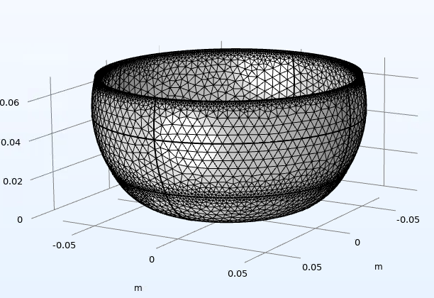

Project Description
This project focuses on the experimental and numerical analysis of the vibration modes of a Tibetan bowl. The objective is to identify the natural frequencies and vibration patterns of the structure using experimental measurements and numerical simulation.
Methodology:
Experimental acoustic measurements
Signal processing using Python and Fast Fourier Transform (FFT)
Modal analysis using COMSOL Multiphysics
Comparison between experimental and numerical results
Technical Tools:
Python - FFT signal analysis
COMSOL Multiphysics - Modal simulation
Mechanical vibrations
Numerical modeling